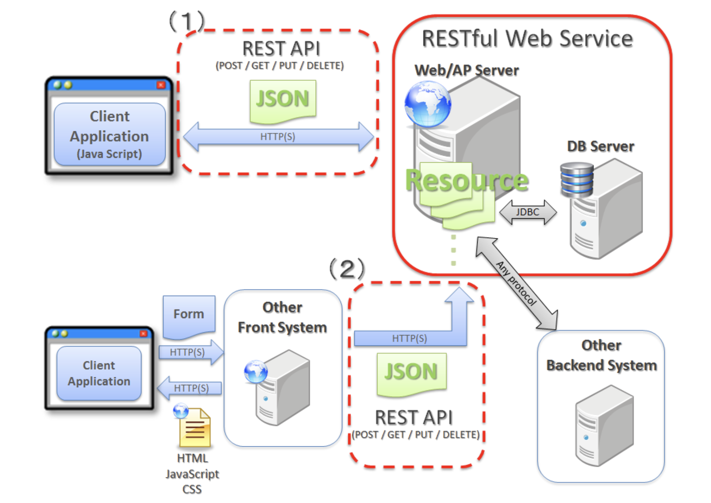
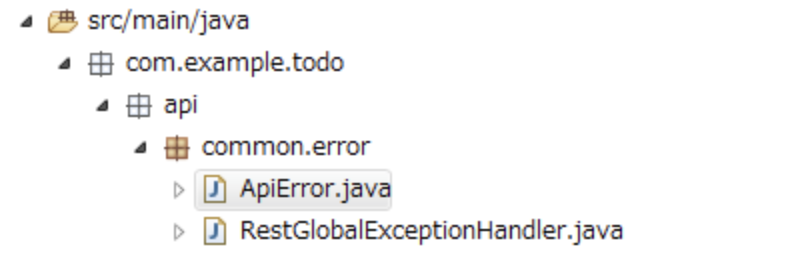

4. チュートリアル11.2：RESTでのTODOアプリケーション¶
4.1. REST API(REpresentational State Transfer)¶
クライアントとサーバーでデータをやり取りするためのアーキテクチャスタイルの一つ。
RESTにはいくつかの原則があり、それらを原則に従っているシステムをRESTfulと呼ばれる。

Webシステムの設計思想であり、RESTであるための原則は4つ
統一インターフェース
情報のやり取りについてあらかじめ定義されていること 「GET／POST／DELETE／PUT」などのHTTPリクエストを利用することやJSON形式であることなどを決めている。アドレス可能性
全ての情報がURIを持つこと接続性
各エンドポイント間で接続できることステートレス性
やり取りが一回ずつで完結すること
4.2. チュートリアルでやりたいこと¶
全件取得・一件取得・削除・完了状態などをRESTで設定できるようにする。
GET api/v1/todos：全件取得
GET api/v1/todos/{id}:一件取得
POST api/v1/todos:新規作成
Put api/v1/todos/{id}:完了状態
DELETE api/v1/todos/{id}:削除
エラーメッセージもHTTPのレスポンスで返すようにする。エラーコードをキーとしてプロパティファイルから取得
4.3. 実装¶
4.3.1. DispatcherServletの設定¶
DispatherServletは、フロントでリクエストを受け取って裏側のjavaたちに処理を流していく。

4.3.1.1. web.xmlの修正¶
src/main/webapp/WEB-INF/web.xmlに設定を追加する
REST用のMVC設定ファイルをMETA-INF/spring/spring-mvc-rest.xmlに書き込むことを指定する。
DispatcherServletにマッピングするURLを指定する。今回は/api/v1/*へのURLはDispathcerServletにマッピングする。
<servlet>
<servlet-name>restApiServlet</servlet-name>
<servlet-class>org.springframework.web.servlet.DispatcherServlet</servlet-class>
<init-param>
<param-name>contextConfigLocation</param-name>
<!-- ApplicationContext for Spring MVC (REST) -->
<param-value>classpath*:META-INF/spring/spring-mvc-rest.xml</param-value>
</init-param>
<load-on-startup>1</load-on-startup>
</servlet>
<servlet-mapping>
<servlet-name>restApiServlet</servlet-name>
<url-pattern>/api/v1/*</url-pattern>
</servlet-mapping>
4.3.1.2. rest用の設定ファイルの作成¶
META-INF/spring/spring-mvc-rest.xmlを作成
component-scanの対象などを指定する。com.example.todo.api配下を指定して、apiの開発はこちらで実施する。
詳細はチュートリアルページ参照
4.3.2. REST APIのパッケージ作成¶
com.example.todo.api.todoというパッケージを作成する。
api.todoパッケージの配下として作成するクラスは以下
[NAME]Resource
[NAME]RestController
[NAME]Helper(必要なら)
4.3.3. TodoResourceの実装¶
src/main/java/com/example/todo/api/todo/TodoResource.javaを作成する
Domain層で作成したcom.example.todo.domain.modelのTodo.javaと同様の指定に見えるが、TodoResoueceではクライアントとのやり取りの中で扱う情報が定義されている。
Todo.javaで定義するのは、業務処理の中で扱うデータであるので、ここは明確に分ける。
詳細はチュートリアルページ参照
4.3.4. TodoRestControllerの実装¶
src/main/java/com/example/todo/api/todo/TodoRestController.javaを作成する
この中で、各RESTの処理を記述していく
@RestController
@RequestMapping("todos") // <ContentPath>/api/todo/todosに対してマッピング
public class TodoRestController {
@Inject
TodoService todoService;
@Inject
Mapper beanMapper;
// 全件取得
@GetMapping //GETメソッドに対するマッピング
@ResponseStatus(HttpStatus.OK) // HTTPステータス200を返す
public List<TodoResource> getTodos() {
Collection<Todo> todos = todoService.findAll();
List<TodoResource> todoResources = new ArrayList<>();
for (Todo todo : todos) {
todoResources.add(beanMapper.map(todo, TodoResource.class)); //todoResouces型に変換
}
return todoResources; // todoResouces型はJSONに変換される
}
// 新規作成
@PostMapping //POSTメソッドに対するマッピング
@ResponseStatus(HttpStatus.CREATED) // HTTPステータス201 CREATEDを返す
public TodoResource postTodos(@RequestBody @Validated TodoResource todoResource) { //todoResourceで受け取る
Todo createdTodo = todoService.create(beanMapper.map(todoResource, Todo.class)); //todoResourceをtodo型に変換して処理を実行
TodoResource createdTodoResponse = beanMapper.map(createdTodo, TodoResource.class); //todoResouces型に変換
return createdTodoResponse; // todoResouces型はJSONに変換される
}
// 1件取得
@GetMapping("{todoId}") //IDまで指定された場合のGETメソッドに対するマッピング
@ResponseStatus(HttpStatus.OK)
public TodoResource getTodo(@PathVariable("todoId") String todoId) { // PathVariableでパスに含まれる変数を取得する
Todo todo = todoService.findOne(todoId); //findOneはtodoServiceに定義しておく
TodoResource todoResource = beanMapper.map(todo, TodoResource.class);
return todoResource;
}
// 更新
@PutMapping("{todoId}")
@ResponseStatus(HttpStatus.OK)
public TodoResource putTodo(@PathVariable("todoId") String todoId) {
Todo finishedTodo = todoService.finish(todoId);
TodoResource finishedTodoResource = beanMapper.map(finishedTodo, TodoResource.class);
return finishedTodoResource;
}
// 削除
@DeleteMapping("{todoId}")
@ResponseStatus(HttpStatus.NO_CONTENT) // HTTPステータス 204 No Contentを返す
public void deleteTodo(@PathVariable("todoId") String todoId) {
todoService.delete(todoId);
}
}
4.3.5. 例外ハンドリングの実装¶
これまでは、エラーメッセージをtodoServiceでハードコーディングしていたが、プロパティファイルからメッセージを取得する実装に変更する。
最終的には、プロパティファイルからエラーメッセージがまとめられていて、Serviceからはエラーコードを渡し、エラーのハンドリングはerroe用のパッケージを準備する。
4.3.5.1. Serviceの修正¶
エラーメッセージをハードコーディングしていた部分を、エラーコードを渡す処理に変更
変更前
@Override
public Todo create(Todo todo) {
...
ResultMessages messages = ResultMessages.error();
messages.add(ResultMessage
.fromText("[E001] The count of un-finished Todo must not be over "
+ MAX_UNFINISHED_COUNT + "."));
...
}
変更後
@Override
public Todo create(Todo todo) {
...
ResultMessages messages = ResultMessages.error();
messages.add("E001", MAX_UNFINISHED_COUNT);
...
}
4.3.5.2. プロパティファイルの作成¶
処理結果に関するエラーメッセージを管理するプロパティファイルsrc/main/resources/i18n/application-messages.properties配下にアプリ用のエラーメッセージを追加する。
# For this tutorial
E001 = [E001] The count of un-finished Todo must not be over {0}.
E002 = [E002] The requested Todo is already finished. (id={0})
E400 = [E400] The requested Todo contains invalid values.
E404 = [E404] The requested Todo is not found. (id={0})
E500 = [E500] System error occurred.
E999 = [E999] Error occurred. Caused by : {0}
入力チェック用のエラーコードに対応するエラーメッセージを管理するプロパティファイルsrc/main/resources/ValidationMessages.properties 配下に追加する。
javax.validation.constraints.NotNull.message = {0} may not be null.
javax.validation.constraints.Size.message = {0} size must be between {min} and {max}.
4.3.5.3. errorパッケージの作成¶
エラーハンドリング用のパッケージcom.example.todo.api.common.errorを作成する
実装は、ResponseEntityExceptionHandlerを継承したcom.example.todo.api.common.error.RestGlobalExceptionHandlerクラスを作成して行う。
このクラスに実装していくことで、HTTPレスポンスBODYにエラー情報が出力される。
詳細はチュートリアル参照
REST APIで発生したエラー情報を保持するクラスとして、ApiErrorクラスをcom.example.todo.api.common.errorパッケージに作成する。
ApiErrorクラスがJSONに変換されて、クライアントに応答される。
詳細はチュートリアル参照
